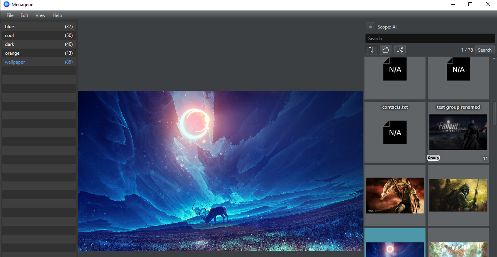
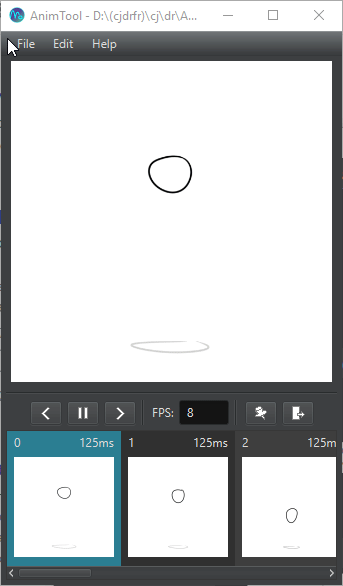

Projects
A responsive local media file organization and management tool capable of complex tag searches, duplicate image detection, and slideshows and previewing among many other features. Menagerie is a long running project that has seen many iterations over the years.

Born of a need for 2D digital animators to be able to preview animations made in software that does not support animation; AnimTool displays a live preview of an animation constructed of individual frames. Includes features such as GIF exporting, frame-by-frame navigation, and custom framerates

A CUDA GPU implementation of a set-to-set comparison of image color histograms by exploiting the high parallelism of the dataset. Produced a 50x improvement in performance, reducing runtime from approximately 414 seconds to 8 seconds on average.
By training a Random Forest machine learning model with local weather data and flight cancellation history, we were able to produce predictions of delays for flights within 8 minutes of observed delay due to weather.